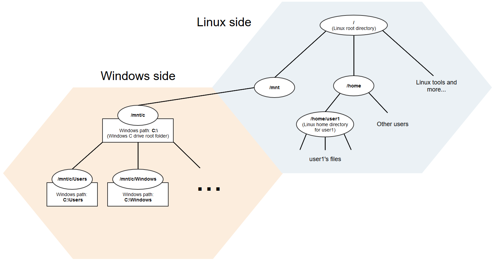
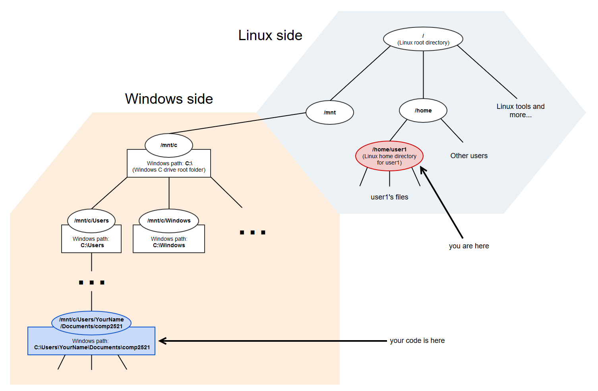
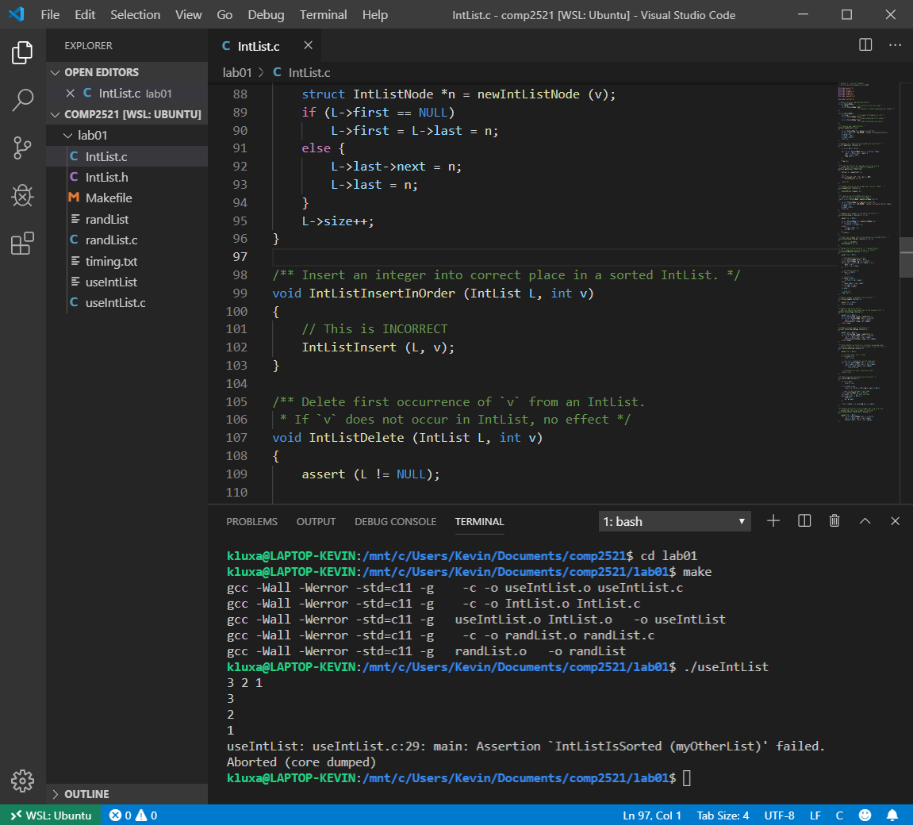

This guide will walk you through the installation and setup of Windows Subsystem for Linux (WSL) on your Windows machine, which will give you access to Linux tools on Windows. This will enable you to compile and test your lab and assignment code on your local machine as if you were working on VLAB or the CSE lab machines.
None
In this part, you will install and set up WSL on your Windows machine. You will also compile and run a simple C program on the WSL command prompt.
To help you better understand how WSL works, here is a diagram of the WSL file system:
As shown in the diagram, the WSL file system is built on top of the Windows file system. (The technical phrase is that the WSL file system mounts the Windows file system.) This gives the WSL command prompt access to files on the 'Windows side' in addition to the Linux tools on the 'Linux side', which allows you to run Linux tools on code situated on the Windows side.
There is a guide on how to set up and install WSL on the Microsoft website. The sections you should follow are Install on Windows 10 and Initialize Distro. I recommend getting the Ubuntu distribution from the Microsoft Store.
Here are some screenshots from the setup process to help you ensure that you are on the right track:
Now that you've installed WSL, let's try to compile a simple program on it. First, use the command vim helloWorld.c to open a file called helloWorld.c in VIM. Then, press I to enter insertion mode, and insert the following code:
#include <stdio.h>
int main(void) {
printf("Hello, World!\n");
}
When you are done, press Esc to leave insertion mode, and then type :wq (followed by pressing enter) to write to the file (i.e., save the file) and quit.
Now, it's time to compile the program. In COMP2521, you'll be using gcc rather than dcc to compile your programs. The compilation command is:
$ gcc -Wall -Werror -std=c11 -o helloWorld helloWorld.c
At the moment, this won't work, as gcc is not yet installed on WSL. Instead, you'll get a message telling you to install gcc. Follow the instructions to install it and then try again. (Later on, you'll need to install other programs such as gdb and make.)
$ sudo apt install gcc
...
$ gcc -Wall -Werror -std=c11 -o helloWorld helloWorld.c
$ ./helloWorld
Hello, World!
$
If you've made it this far, congratulations! You've successfully installed WSL and used it to compile and run a simple C program.
In this part, you will learn some tips and tricks for navigating around the WSL file system.
In the diagram of the WSL file system in the previous section, you saw that it is possible for the WSL command prompt to access files on the Windows side. But so far, we've been working entirely on the Linux side - the Hello World program was written and compiled in our Linux home directory. Now, we will use WSL to compile and run code on the Windows side.
Suppose that your COMP2521 code is stored on the path C:\Users\YourName\Documents\comp2521 within the Windows file system. You want to compile and test it, so you start up the WSL command prompt, which opens to your Linux home directory.
$ pwd # prints the current working directory
/home/user1 # your username is probably *not* user1, so you'll see something different
So how can you navigate to your code? The diagram below shows the current situation.

Since the Windows path is C:\Users\YourName\Documents\comp2521, the corresponding Linux path is /mnt/c/Users/YourName/Documents/comp2521. So the command to navigate to your COMP2521 directory is:
$ cd /mnt/c/Users/YourName/Documents/comp2521
Great! Now we can compile and run our code just like on VLAB or the CSE machines.
$ cd lab01
$ make
...
$ ./useIntList
...
So now you know how to navigate to files on the Windows side. This is all well and good, but you still have to type that long pathname whenever you open the WSL command prompt. How can we get rid of this mild annoyance?
Answer: symlinks!
A symlink is like a shortcut in Windows. We're going to create a shortcut from your Linux home directory to your COMP2521 directory. The command for creating a symlink in Linux is ln -s <target path> <link name>. In this example, the target path (i.e., the pathname of your COMP2521 directory) is /mnt/c/Users/YourName/Documents/comp2521. The link name be anything, but it makes sense to call it comp2521. Thus, the full command is:
$ cd # go back to the home directory
$ ln -s /mnt/c/Users/YourName/Documents/comp2521 comp2521
Now, when you use the ls command, you should see the comp2521 symlink you've just made, and doing cd comp2521 should take you directly to the directory containing your COMP2521 code. Hooray!
$ ls
comp2521 helloWorld helloWorld.c
$ cd comp2521
$ cd lab01 # we could have done cd comp2521/lab01 instead of cd'ing twice
$ make
...
$ ./useIntList
...
Congratulations! Now, you've learned how to navigate to files on the Windows side and create symlinks to them on WSL.
Thanks to VSCode's integrated terminal and Remote - WSL extension, you can open the WSL command prompt in VSCode itself, which should greatly boost your productivity as you won't have to repeatedly switch back and forth between your code editor and terminal window. Here's what it looks like:
Neat, eh?
This is just one of the many great things about VSCode, and I strongly recommend that you use it for coding in COMP2521. You can learn more about VSCode here.
That's all for this guide. Thanks for reading!